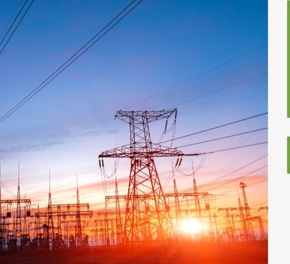
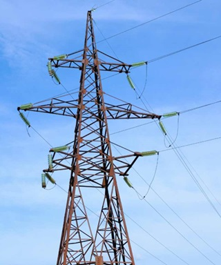

Furnizuesi Juaj i Besuar i Energjisë
Ofrojmë analizë të detajuar dhe ofertim të personalizuar për çdo klient, duke u bazuar në profilin e konsumit dhe tipologjinë e aktivitetit të tij.
Nëse klientët tanë kanë nevojë për rritje të kapaciteteve, ne garantojmë furnizim të qëndrueshëm dhe të pandërprerë me energji, duke siguruar vazhdimësinë e operacioneve për bizneset e tyre.
Volton SHPK është një kompani e licensuar në sektorin e energjisë, e fokusuar në furnizimin me energji elektrike për subjektet e lidhura me rrjetet e tensionit 10 kV, 20 kV, 35 kV dhe 110 kV. Me liberalizimin e tregut të energjisë, ne sjellim fleksibilitet dhe efikasitet për klientët tanë, duke garantuar çmime të qëndrueshme dhe kapacitete të përshtatura sipas nevojave të tyre.
VOLTON SHPK siguron energji elektrike nga burime të ndryshme, duke përfshirë shkëmbimet ndërkombëtare të energjisë dhe prodhuesit vendas. Ekipet tona të përkushtuara parashikojnë saktë vëllimet e konsumit vjetor dhe kërkojnë në mënyrë aktive çmimet më konkurruese në treg. Në këtë mënyrë, ne ofrojmë vlerë optimale, transparencë dhe besueshmëri për çdo klient që na beson furnizimin e energjisë.
Na kontaktoni për çdo pyetje që mund të keni rreth shërbimeve tona të energjisë. Ekipi ynë është gjithmonë i gatshëm për t'ju ndihmuar.